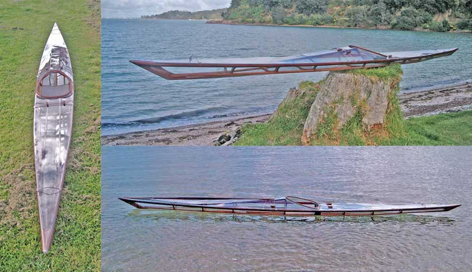

| Sea Rover by Grant Glazer (NZ) | Menu Previous Page Next Page |
|

Grant, from Waiheke Island, New Zealand has completed a wood frame Sea Rover with a clear vinyl skin. He reports that the Sea Rover is one fantastic design for rolling. He has documented the project on his Island Paddler blog. Use the {Back} key to return.
|
|